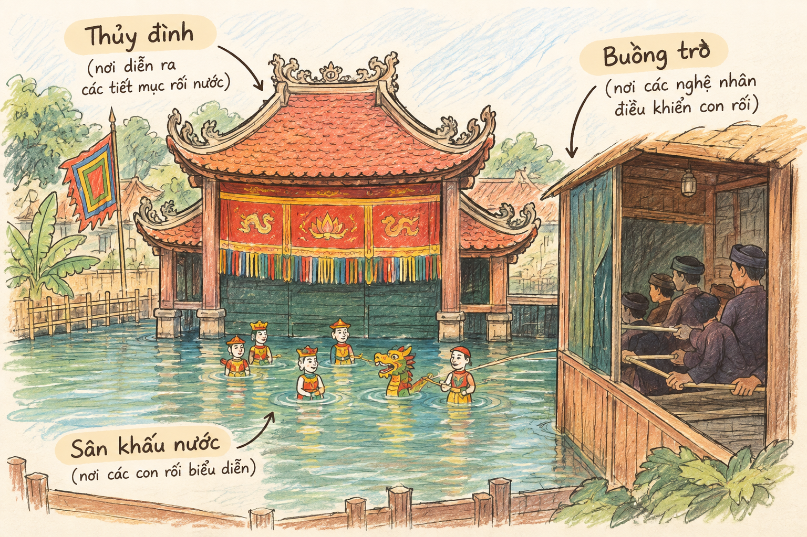

• Bạn đã xem biểu diễn tuồng bao giờ chưa? Bạn nghĩ sao khi loại nghệ thuật sân khấu truyền thống này đang gặp khó khăn trên con đường đến với khán giả hiện đại?
• Hãy tìm xem trên internet toàn bộ hoặc từng trích đoạn của vỏ tuồng này.
Một đêm nọ, Ốc (kẻ chuyên nghề "đào ngạch") hợp tác với Nghêu (thầy bói) đột nhập nhà Trùm Sò (địa chủ) để ăn trộm. Nghêu bị bắt quả tang còn Ốc chạy thoát được. Đồ trộm được Ốc đem bán cho Thị Hến (một người góa chồng buôn bán).
Trùm Sò và Lý trưởng dẫn người đến bắt quả tang. Lý trưởng lợi dụng chuyến này gạ gẫm Thị Hến nhưng không thành. Việc không thành, tất cả dắt nhau lên huyện đường thưa kiện.
Tại đây, Ốc bị phạt quỳ, Nghêu và Lý trưởng bị đánh đòn; riêng Trùm Sò phải tốn tiền hối lộ cho Tri huyện. Nhờ nhan sắc, Thị Hến không những không bị hạch tội mà còn được Tri huyện và Đề lại "chiếu cố", hẹn hò. Cả Tri huyện, Đề lại, Lý trưởng rơi vào bẫy của Thị Hến khi chạm mặt nhau tại nhà cô và bị đánh ghen một trận tơi bời.
Đoạn trích "Huyện đường" tái hiện lại thời điểm nào trong toàn bộ vụ án?
Văn bản Nghêu, Sò, Ốc, Hến do Hoàng Châu Ký chỉnh lý (1957) gồm có tất cả ba hồi. Đoạn trích "Huyện đường" thuộc Cảnh 1 của Hồi thứ II, thể hiện cảnh Tri huyện và Đề lại bàn bạc với nhau về cách nhũng nhiễu, hạch sách người kêu kiện để moi tiền hối lộ.
Hình 1: Tranh minh họa "Huyện đường" (1963) của Nguyễn Đức Nùng (File: h1.png)
Bàn giấy của Tri huyện: Trên tường chính giữa có bức hoành phi đề hai chữ "Huyện đường". Hai bên có hai câu đối. Bền cạnh câu đối phía trái có cửa vào nhà trong.
Một chiếc bàn to để chính giữa làm bàn giấy của tri huyện, trên bàn có ống bút, nghiên mực, điếu điếu. Bên trái, bàn giấy của đề lại để ngoảnh mặt ra khán giả phía phải của sân khấu, trên bàn cũng có nghiên bút và một chồng đơn từ.
Các chi tiết chỉ dẫn bài trí sân khấu nơi huyện đường có vai trò gì?

Nhân vật Tri huyện & Đề lại (h2.png)TRI HUYỆN (Nói lối):
"Quyền trọng trấn nha môn / Bản chức xưng tri huyện
Đình chung đà đủ miếng / Hoa nguyệt cũng quen mùi
Lấy của cậy ngọn roi / Làm quan nhờ lỗ khẩu
Sự lý thường phân ẩu / Được thua tự đồng tiền
Dân xã nếu không kiêng / Bỏ xuống lao giam kỹ."
Phân tích bản chất: Lời xưng danh công khai phơi bày bản chất tham lam, tàn bạo, dâm dật và xem thường pháp luật của Tri huyện. Y thừa nhận trắng trợn việc xử án "được thua tự đồng tiền", bẻ cong lý lẽ nhờ "lỗ khẩu" (miệng lưỡi) và dùng quyền lực bắt bớ dân lành.
Tri huyện và Đề lại không hề giữ ý hay giấu giếm thủ đoạn trước mặt nhau. Họ phối hợp vô cùng ăn ý: Tri huyện chủ trương ngâm vụ án "cứ để đu đưa như vậy đã" để vắt cạn tiền của kẻ giàu (Trùm Sò); Đề lại nhanh chóng phụ họa "Vâng, ta cứ bảo là để tra cứu đã".
Đối với những kẻ "đầu trọc" nghèo khổ (Ốc, Nghêu, Lý trưởng), chúng xử phạt chớp giật để lấy uy và trừng giới. Đối với Thị Hến, Tri huyện trì hoãn để vừa đòi hối lộ vừa gièm pha tán tỉnh.
| Đối tượng | Thành phần / Hoàn cảnh | Thủ đoạn & Phương án xử lý của Huyện đường |
|---|---|---|
| Ốc & Nghêu | Bần nông, trộm cắp, thầy bói dỏm ("kẻ trọc đầu") | Ốc 5 năm tù; Nghêu phạt 50 trượng (xử nhanh lấy uy) |
| Lý trưởng | Cương vị chức dịch địa phương ăn lót tay | Phạt trừng giới 50 quan tiền |
| Trùm Sò | Địa chủ giàu có ("kẻ có tóc") | Ngâm án, trì hoãn để ép hối lộ "ấy" thật nhiều tiền |
| Thị Hến | Góa phụ xinh đẹp, buôn bán hàng trộm | Tạm thời cho về, dùng uy ép hối lộ và lợi dụng sắc đẹp |
Không chỉ cấp thượng quan, tay sai lính lệ nơi huyện đường cũng tranh thủ hoạnh xẹ, vòi vĩnh: "Hôm nay quan bận lắm, tôi bẩm mãi quan mới chịu xử vụ này đấy". Điều này buộc Lý trưởng và Trùm Sò phải lập tức "hậu tạ".
Thái độ người dân xưa: Xem chốn cửa quan là nơi bất công, ma quỷ, nhũng nhiễu. Lời người xưa truyền tụng "Vào cửa quan như vào hang hùm", "Nắm kẻ có tóc chứ ai nắm kẻ trọc đầu" đã được kịch bản lột tả chân thực.
Nghêu, Sò, Ốc, Hến thuộc thể loại Tuồng đồ (tuồng hài) - dòng tuồng dân gian không tuân theo các chuẩn mực nghiêm ngặt của tuồng pho (tuồng hoàng cung). Tuồng đồ lấy đề tài từ đời sống thường nhật, sử dụng ngôn ngữ bình dân hóm hỉnh để châm biếm thói hư nết xấu của quan lại phong kiến.
Thử phân vai cùng nhóm bạn đóng lại trích đoạn "Huyện đường". Chú ý thể hiện điệu bộ vuốt râu, mắt liếc dọc nheo ngang, nụ cười đắc thắng trơ trẽn của Tri huyện và cử chỉ khúm núm nhưng ma ranh của Đề lại!
Khi đọc hiểu kịch bản tuồng, cần phân biệt rõ lời thoại nhân vật (nói lối, xưng danh, đối thoại) với các lời chỉ dẫn sân khấu (in nghiêng, để trong ngoặc đơn) nhằm hình dung đầy đủ hành động kịch.
Câu 1: Tóm tắt các sự việc trong đoạn trích.
Câu 2: Liệt kê những lời thoại cho thấy sự tương đồng về bản chất, thủ đoạn giữa các nhân vật ở huyện đường, từ tri huyện đến đề lại và lính lệ.
Câu 3: Đoạn trích cho thấy tri huyện và đề lại không cần phải giữ ý với nhau. Vì sao vậy? Phân tích sự hô ứng nhịp nhàng trong lời thoại giữa hai nhân vật.
Câu 4: Qua theo dõi cảnh tuồng Huyện đường, bạn hiểu như thế nào về thái độ và cách nhìn nhận của người dân xưa đối với chốn "cửa quan"?
Câu 5: Lời tự giới thiệu (qua hình thức nói lối) của nhân vật tri huyện đã giúp người xem, người đọc hiểu được điều gì về con người ông ta? Hãy so sánh lời tự giới thiệu đó của một nhân vật cụ thể trong tuồng với những lời tự giới thiệu thường gặp trong đời sống để rút ra nhận xét cần thiết.
Câu 6: Nếu được tham gia dựng lại cảnh Huyện đường trên sân khấu, bạn sẽ lưu ý điều gì về diễn xuất của diễn viên? Vì sao?
Kết nối đọc – viết: Viết đoạn văn (khoảng 150 chữ) trình bày suy nghĩ về tiếng cười châm biếm của tác giả dân gian thể hiện qua đoạn trích.
Vượt qua 10 câu hỏi để chinh phục kiến thức tác phẩm Tuồng đồ dân gian!
Yêu cầu: Chỉ ra đối tượng "có tóc" và "trọc đầu" cùng mục đích vụ lợi của quan lại.
Lời giải chi tiết:
1. Định nghĩa đối tượng: "Kẻ trọc đầu" chỉ những dân nghèo như Ốc, Nghêu không có tài sản để vắt óc hối lộ; "kẻ có tóc" chỉ địa chủ giàu có như Trùm Sò hoặc phụ nữ có nhan sắc như Thị Hến.
2. Bản chất châm biếm: Tri huyện dùng thành ngữ dân gian để hợp lý hóa hành vi tham nhũng trơ trẽn. Quan lại không phân xử theo lẽ phải hay pháp luật mà dựa trên tiềm lực kinh tế của đương sự để vắt chanh bỏ vỏ.
Biết trích đoạn "Huyện đường" nằm ở Hồi II chiếm tỷ lệ thời lượng \( k = 20\% \) toàn bộ đêm diễn. Giữa các cảnh diễn có thời gian chuyển cảnh dọn đạo cụ tổng cộng là \( t_{chuyen} = 15 \) phút. Hãy tính thời lượng biểu diễn thực tế \( t_{huyen\_duong} \) của cảnh Huyện đường và hiệu suất thời gian biểu diễn nghệ thuật \( H \) của đêm diễn.
Lời giải chi tiết:
• Thời lượng biểu diễn của trích đoạn Huyện đường là: \( t_{huyen\_duong} = T \times k = 120 \times 20\% = 24 \) phút.
• Tổng thời gian diễn viên biểu diễn thực tế trên sân khấu là: \( T_{dien} = T - t_{chuyen} = 120 - 15 = 105 \) phút.
• Tỷ lệ hiệu suất thời gian biểu diễn nghệ thuật đạt: \( H = \frac{T_{dien}}{T} \times 100\% = \frac{105}{120} \times 100\% = 87.5\% \).
Nêu giải pháp về kịch bản, phương tiện truyền thông và hoạt động ngoại khóa.
Lời giải chi tiết:
1. Sáng tạo nội dung: Việt hóa kịch bản Tuồng bằng phụ đề hiện đại, tóm tắt diễn biến dưới dạng comic/infographic ngắn gọn dễ hiểu.
2. Truyền thông đa kênh: Tận dụng nền tảng video ngắn (TikTok, Facebook Reels) quay hậu trường hóa trang, hướng dẫn các điệu nói lối hoặc múa bộ Tuồng.
3. Trải nghiệm thực tế: Tổ chức CLB Kịch nghệ trường học cho học sinh nhập vai, hóa trang nhân vật Tuồng đồ để gia tăng tính tương tác.